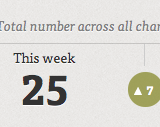
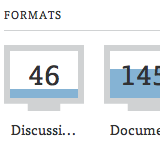

BBC Dashboard
- 
- 

The BBC Dashboard was a daily view of television data collected via the Channelography project.
It reveals a few key pieces of data, making them readable 'at a glance', in the manner of a car dashboard or office noticeboard.
Data points included the daily level of repeated programming, by channel, the number of films being broadcast, and some of the top terms currently being mentioned in the news and in documentaries.
The project was a commission from BBC R&D, and was designed to explore how detailed data could be aggregated upwards into a consumable, single screen front end.
The project has now been retired.